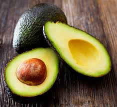
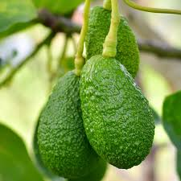

Alpukat, yang juga dikenal sebagai alligator pear atau avocado pear (Persea americana), adalah pohon hijau
abadi
dari keluarga laurel (Lauraceae). Tanaman ini berasal dari Amerika dan pertama kali dibudidayakan di
Mesoamerika
lebih dari 5.000 tahun yang lalu. Alpukat dihargai karena buahnya yang besar dan memiliki kandungan minyak
yang
tinggi.Pohon ini kemungkinan berasal dari dataran tinggi yang menghubungkan Meksiko bagian tengah-selatan
dan
Guatemala. Secara alami, pohon alpukat tumbuh di wilayah yang membentang dari Meksiko hingga Kosta Rika.
Alpukat secara botani dikategorikan sebagai beri besar yang mengandung satu biji besar di dalamnya.
Penelitian
genom alpukat menunjukkan bahwa evolusinya dipengaruhi oleh peristiwa poliploidi dan bahwa varietas
komersialnya
berasal dari hibrida. Pohon alpukat sebagian dapat melakukan penyerbukan sendiri, tetapi umumnya diperbanyak
melalui teknik pencangkokan untuk mempertahankan kualitas buah yang konsisten. Saat ini, alpukat
dibudidayakan
di berbagai negara dengan iklim tropis dan Mediterania. Hingga tahun 2023, Meksiko menjadi produsen alpukat
terbesar di dunia, menyumbang 29% dari total panen global yang mencapai 10,5 juta ton.
Buah alpukat dari varietas domestik memiliki daging berwarna hijau keemasan yang lembut dan bertekstur mentega
saat matang. Bergantung pada kultivarnya, kulit alpukat bisa berwarna hijau, coklat, ungu, atau hitam, dengan
bentuk yang dapat menyerupai buah pir, telur, atau bulat. Untuk keperluan komersial, buah ini biasanya dipanen
dalam keadaan belum matang dan dibiarkan matang setelah dipanen. Kepadatan nutrisi dan kandungan lemak tinggi
dalam daging alpukat menjadi nilai tambah dalam berbagai jenis masakan, termasuk diet vegetarian.
Di daerah produksi utama seperti Chili, Meksiko, dan California, kebutuhan air yang tinggi dalam budidaya alpukat
memberikan tekanan besar terhadap sumber daya lokal. Produksi alpukat juga dikaitkan dengan berbagai dampak
lingkungan dan sosial, termasuk deforestasi serta isu hak asasi manusia akibat sebagian kendali produksi di
Meksiko yang dikuasai oleh kelompok kejahatan terorganisir.


Anda Ingin Buah Alpukat?, Penawaran Khusus Bagi Anda
Harga 1 Kg Rp. 35.000 Nah Sekarang Rp. 25.000 saja
Gimana? Tertarik!
PEMBAYARAN DI TEMPAT / COD
hanya untuk Jakarta, Bekasi, dan Depok
Potongan Ongkir Rp. 5.000,-
UNTUK PEMBELIAN VIA TRANSFER